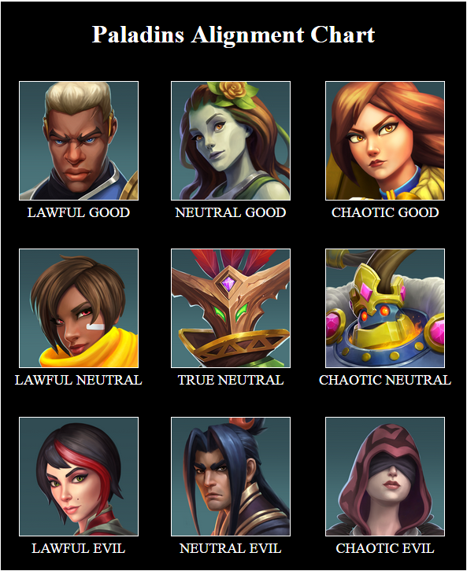

Exercises
The following exercises contribute to assignment credit and should be checked off with Mark during lab. Dr. Turner may also give other assignments to be completed during lab.
Exercise 1
Create a webpage that presents a poem. Your webpage should follow these general requirements:
- The title of the poem is visible in a heading at the top of the page.
- The author of the poem is visible in a subheading.
- The poem contains multiple stanzas (paragraphs) and multiple verses (lines) per stanza.
- Special words in the poem are marked up as bold or italic.
You may add additional markup such as horizontal lines, extra line break elements for extra spacing between lines, and quotation elements.
Exercise 2
Create a webpage that contains a list of links to your favorite websites. Make each link a clickable image of the logo of the website which it leads to. You may optionally add other content such as a title at the top of the page or a caption for each image link.
Exercise 3
Create an account at Github. Create a repository and enable Github Pages in the settings for that repository. Upload a file named index.html to that repository. If successful, your website should be located at a URL similar to https://{USERNAME}.github.io/{WEBSITE} where {USERNAME} is your github username and {WEBSITE} is the name of the github repository that you created.
Exercise 4
Create an alignment chart using HTML and CSS. You may use any fiction or non-fiction characters in your chart. Here's an example of an alignment chart that I made based on the characters from Paladins:
The alignment chart can be made using an HTML table with an image and text in each cell. CSS can be used to apply colors, padding, and borders to the table. Get creative.
Exercise 5
Add a navigation menu to the top of the webpages that you created for exercises 1, 2, and 4 so that they link to each other. Use CSS to give the menu items a visual cue on hover or focus. Upload the results to your Github website.
Exercise 6
Create a webpage that contains a website title, navigation menu, and a 3-column layout for the main content. The webpage can be about anything. Store your HTML code and CSS code in separate files. See the lecture notes on navigation links and Layouts for guidance on creating the navigation menu and 3-column layout respectively.
Here is an example of a webpage that's designed according to this exercise:
Exercise 7
Take the webpage that you created for exercise 6 and apply the following modifications:
- Make the navigation bar display vertically when the screen width is less than 600px.
- If the screen width is greater than or equal to 600px, make the navigation bar display horizontally.
- If the webpage is being printed, hide the navigation bar and hide the website title.
Research CSS media queries to help you with this exercise.
Exercise 8
Take the web page that you created for Exercise 7 and add 2 buttons on the page. The first button should be labeled "Light theme" and the second button should be labeled "Dark theme". When clicked, the "Light theme" button should modify the CSS of the webpage to have light background colors and dark foreground colors. When clicked, the "Dark theme" button should modify the CSS of the webpage to have dark background colors and light foreground colors. The webpage should keep it's theme after being refreshed.
A button can be created by using the <input> element with type="button". A button's onclick attribute can be used to make a JavaScript function call.
In JavaScript, document.querySelector and document.querySelectorAll can be used to select an HTML element(s) based on a CSS selector string such as "body>main" or "#id". Once an HTML element object is obtained, it's style property contains CSS related properties such as color and backgroundColor which can be read or assigned-to to dynamically change the CSS style of the associated HTML element.
localStorage can be used to store strings associated with the webpage that persists even after the browser or tab is closed.